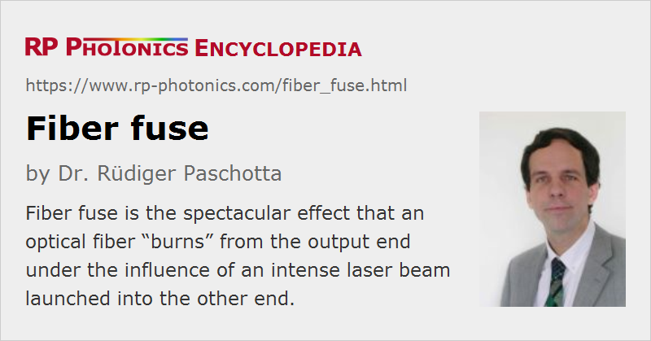

Fiber Fuse
Definition: the effect that an optical fiber “burns” from the output end under the influence of an intense laser beam launched into the other end
Category: fiber optics and waveguides
How to cite the article; suggest additional literature
Author: Dr. Rüdiger Paschotta
The small mode areas for light propagating through fibers lead to high optical intensities even for moderate power levels. It is therefore no surprise that particularly a fiber input end, into which a laser beam is launched, can easily be destroyed, particularly when the fiber end is not very clean. The more surprising effect, however, is that a fiber can also burn down starting from the output end. Here, a bright white spot can be seen, which results from a hot plasma forming at the fiber end. As this plasma fuses the fiber, it propagates back towards the input end with a velocity which can be several meters per second. In standard single-mode fibers, this phenomenon can occur already for powers below 1 W if something (e.g. a burning dust particle) triggers the plasma at the output end. An important ingredient for the underlying mechanism is that the absorption losses of silica sharply rise at temperatures above 1000 °C.
The effect of fiber fuse can be disastrous in a telecom system where kilometers of fiber may be destroyed as a result of a failure at only one point. This is a concern for fiber-optic links with extremely high transmission capacities. A partial remedy may be to reduce the cladding diameter at certain points so that the fiber fuse is stopped at such locations [2].
Note that high-power fiber amplifiers are at particularly high risk of suffering fiber fuse; appropriate measures have to be taken to ensure device reliability.
Questions and Comments from Users
Here you can submit questions and comments. As far as they get accepted by the author, they will appear above this paragraph together with the author’s answer. The author will decide on acceptance based on certain criteria. Essentially, the issue must be of sufficiently broad interest.
Please do not enter personal data here; we would otherwise delete it soon. (See also our privacy declaration.) If you wish to receive personal feedback or consultancy from the author, please contact him e.g. via e-mail.
By submitting the information, you give your consent to the potential publication of your inputs on our website according to our rules. (If you later retract your consent, we will delete those inputs.) As your inputs are first reviewed by the author, they may be published with some delay.
Bibliography
| [1] | R. Kashyap and K. J. Blow, “Observation of catastrophic self-propelled self-focusing in optical fibres”, Electron. Lett. 24, 47 (1988) (first report of fiber fuse effect), doi:10.1049/el:19880032 |
| [2] | E. M. Dianov, I. A. Bufetov, and A. A. Frolov, “Destruction of silica fiber cladding by the fuse effect”, Opt. Lett. 29 (16), 1852 (2004), doi:10.1364/OL.29.001852 |
| [3] | S. Jiang et al., “Observation of fiber fuse propagation speed with high temporal resolution using heterodyne detection and time-frequency analysis”, Opt. Lett. 42 (17), 3355 (2017), doi:10.1364/OL.42.003355 |
See also: fibers, fiber lasers, fiber amplifiers, fusion splicing of fibers
and other articles in the category fiber optics and waveguides
|  |
If you like this page, please share the link with your friends and colleagues, e.g. via social media:
These sharing buttons are implemented in a privacy-friendly way!